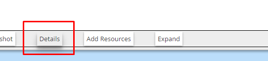
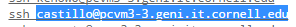
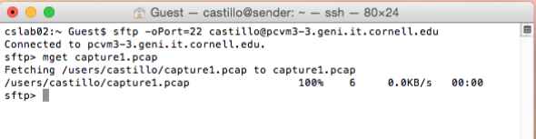

- Using sftp on Macs to transfer files from your nodes -
How to use sftp to retrieve files from your nodes
- First you will have to go the "Details" page of your slice

- Now under the node from which you want to retrieve the files, find your username. When you find your username, copy all the information I highlighted in the following screenshot:

- In the information I highlighted you might see
-p someNumber in your case, that number will be the one you will use, in my case, since no number shows up, it means we have to use the default SSH port, which is 22.
- Go ahead and open a terminal on your Mac and execute the following command:
sftp -oPort=<Your corresponding port from the previous step> your_username@host
- In my case I had to execute the following (Use it to compare with the previous screenshot to see how I submited the information):
sftp -oPort=22 castillo@pcvm3-3.geni.it.cornell.edu
- Now, everytime you want to download a file from your node, simply execute the following command:
mget filename
- For example, say I wanted to download from the node the file capture1.pcap, I would execute:
mget capture1.pcap
